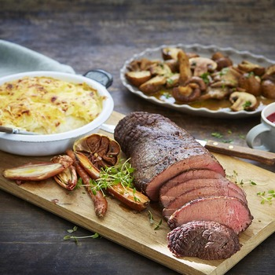
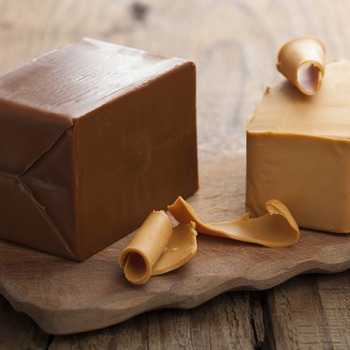

Морепродукты
Чтобы в полной мере оценить вкус норвежских даров моря, нужно побывать на рыбном рынке или в ресторане в одном из прибрежных городов. Там можно найти мидии, гребешки, лангустов, крабов и различные виды рыбы.
Детальнее

Блюда из баранины
Норвежская баранина по праву входит в число лучших в мире. Почти все норвежские овцы пасутся на удаленных пастбищах среди нетронутой природы. Вам обязательно следует попробовать «феналорь», «пиннещëт» и «смалахове».
Детальнее

Сыры
Самый знаменитый норвежский сыр - это «брюнуст», коричневый сыр. Этот карамелизированный сыр из молочной сыворотки чем-то напоминает ириску. Норвежцы часто едят его с чем-то сладким, например, с вафлями.
Детальнее